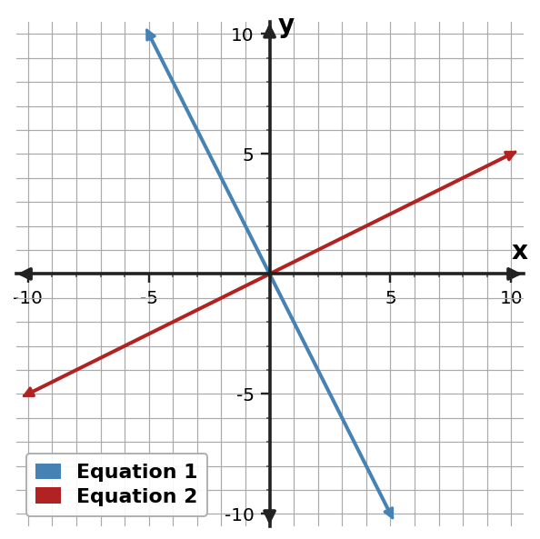

Algebra Extra Practice 3.1
1. Use the table to identify the ordered pair that satisfies both equations.
| $x$ | Equation 1 $y$ | Equation 2 $y$ |
|---|---|---|
| -3 | -3 | -1 |
| -2 | -1 | 0 |
| -1 | 1 | 1 |
| 0 | 3 | 2 |
| 1 | 5 | 3 |
2. Solve by elimination the system. $\begin{cases}2x+y=3\\3x-y=7\end{cases}$
3. Solve by elimination the system. $\begin{cases}3x+y=0\\x-y=-4\end{cases}$
4. Classify the system as one solution, no solution, or infinitely many solutions. $\begin{cases}y=-2x+1\\y=-x+2\end{cases}$
5. Use the graph to determine the solution of the system.

6. A student tries to eliminate $y$ from $2x+y=5$ and $3x-y=0$ by subtracting the equations. Identify the error and state the efficient operation.
7. Use the graph to determine the solution of the system.

8. Use the table to identify the ordered pair that satisfies both equations.
| x | Equation 1 y | Equation 2 y |
|---|---|---|
| -5 | -7 | -5 |
| -4 | -5 | -4 |
| -3 | -3 | -3 |
| -2 | -1 | -2 |
| -1 | 1 | -1 |
9. Solve by elimination the system. $\begin{cases}3x+y=11\\x-y=5\end{cases}$
10. Solve by elimination. $\begin{cases}2x+y=5\\-2x+y=-7\end{cases}$
11. Classify the system as one solution, no solution, or infinitely many solutions. $\begin{cases}y=x\\2y=2x\end{cases}$
12. Use the table to identify the ordered pair that satisfies both equations.
| $x$ | Equation 1 $y$ | Equation 2 $y$ |
|---|---|---|
| -4 | 1 | 5 |
| -3 | 2 | 4 |
| -2 | 3 | 3 |
| -1 | 4 | 2 |
| 0 | 5 | 1 |
13. A student tries to eliminate $y$ from $2x+y=0$ and $4x-y=-6$ by subtracting the equations. Identify the error and state the efficient operation.
14. Use the graph to determine the solution of the system.

15. Use the table to identify the ordered pair that satisfies both equations.
| $x$ | Equation 1 $y$ | Equation 2 $y$ |
|---|---|---|
| -2 | 6 | 0 |
| -1 | 5 | 2 |
| 0 | 4 | 4 |
| 1 | 3 | 6 |
| 2 | 2 | 8 |
16. Solve by elimination: $\begin{cases}x+y=7\\x-y=3\end{cases}$
17. Solve by elimination the system. $\begin{cases}x+y=5\\2x-y=4\end{cases}$
18. Classify the system as one solution, no solution, or infinitely many solutions. $\begin{cases}y=-x-1\\2y=-2x-2\end{cases}$
19. Classify the system as one solution, no solution, or infinitely many solutions. $\begin{cases}y=2x+2\\y=2x+5\end{cases}$
20. A student tries to eliminate $y$ from $x+y=3$ and $2x-y=3$ by subtracting the equations. Identify the error and state the efficient operation.
21. Use the graph to determine the solution of the system.

22. Use the table to identify the ordered pair that satisfies both equations.
| $x$ | Equation 1 $y$ | Equation 2 $y$ |
|---|---|---|
| -1 | -7 | 3 |
| 0 | -4 | 1 |
| 1 | -1 | -1 |
| 2 | 2 | -3 |
| 3 | 5 | -5 |
23. Solve by elimination: $\begin{cases}2x+y=0\\x-2y=10\end{cases}$
24. Solve by elimination the system. $\begin{cases}2x+y=-3\\3x-y=-7\end{cases}$